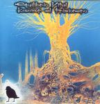

Home Artist links Label link

Equilibrio Vital - Kazmor El Prisionero
| Artist: | Equilibrio Vital |
| Title: | Kazmor El Prisionero |
| Label: | Musea FGBG4659 |
| Length(s): | 62 minutes |
| Year(s) of release: | 1984 |
| Month of review: | [10/2007] |
Line up
Marco Chacon - lead guitars; vocals
Carlos Serga - rhythm guitars
Arnoldo Serga - bass, acoustic guitar
Guillermo Gonzalez - bass; flute; vocals
Elena Prieto - vocals
Laurcano Rangel - drums
LINEUP (9 to 13):
Guillermo Gonzalez - guitars; flute; vocals
Arnoldo Serga - bass
Jacinto Gonzalez - ac. guitar
Jorge Ayala - drums; vocals
Endyork Moroldo - keyboards
Gabriel Adreu - violoncello
Tracks
| 1) | El Ausente | 4.28
|
| 2) | Kazmor | 4.57
|
| 3) | Mi Cancion-I | 4.44
|
| 4) | Lluvia Cosmica | 7.19
|
| 5) | Askgriglam | 7.46
|
| 6) | Yellenik | 3.17
|
| 7) | Inocentes Perdidos | 3.04
|
| 8) | Mi Cancion-II | 2.12
|
| 9) | Sudyenin | 10.04
|
| 10) | Tempestad | 3.20
|
| 11) | Mirando Al Horizonte | 3.05
|
| 12) | Campanas Al Viento | 4.23
|
| 13) | Volver | 2.56
|
Summary
The music
This album was originally release in 1984, and is filled with accessible progressive rock, of a symphonic persuasion, from its clear South American origin. The songs are sung by a man and a woman, sometimes together, sometimes alone. The female voice is a bit on the shrill side, which is made clear by the at times long sweeps, but even more by their near shouted delivery, from both man and woman. This culminates in Askgriglam, a near instrumental track with Prieto chanting, nay howling, in a high pitched, too often off key style. Things get ugly on this track, even as it works towards a strong climax. What were they thinking when they decided to put this on the album... And, then to top it off, they more or less continue into the next track. Prieto is both less dominant and less present in this one, but the fact remains.
The gusto with which the band deliver their music is definitely a positive point. The instrumentalists work well to create a rounded off sound, getting ample opportunity for displaying their prowess in both songs and instrumental tracks. This combination of instrumental prowess and gusto makes for a great sound.
Then there's some technical nuts to be cracked. The sound quality is pretty poor, sounds like it was recorded inside a vacuum cleaner. And vinyl ticks are clearly audible at the end of track 7 and start of track 8. And I heard some at the start of track 3 as well. Excuse me?
Tracks 9 through 13 were recorded with the 2005 line up, and were added as a bonus to this re-release. Obviously the recording quality of this material is significantly better (though still far from top notch) and there are no vinyl ticks here. The shrieking lady has gone, and the vocals are a lot more peaceful. Peaceful, to the point of sedate, unfortunately. All that gusto from the eighties, with its highs and lows has been replaced by an unoffensive performance that moves in the direction of bland.
Conclusion
From a compositional band point of view this band performs well in its chosen musical vein. Instrumentally they are quite able too. The sensitive side lays with the vocals. Chacon is not the world's best vocalist, a tad insecure at some times, a bit shouty at others, but sufficient in staying with the programme. Prieto, however, is a whole different cup of tea. Her shrill and too often off key delivery drag down the tracks on which she performs. Thus an unequivocal thumbs up for this band is far out of reach. A shame, really, if you imagine what the band would have sounded like without her. The bonus shows the band have repaired all that nowadays, losing all what was good in the past, too. Maybe this band was good sometime around 1990, but in 1984 and 2005 they had severe problems that were and are just a tad too present to be ignored for good results. Unfortunate, that is. Having said that, by cutting out the tracks on which Prieto's most present as well as the bonus tracks, you would improve significantly on the overall result and end up with a good disc, albeit a shortish one.
© Roberto Lambooy